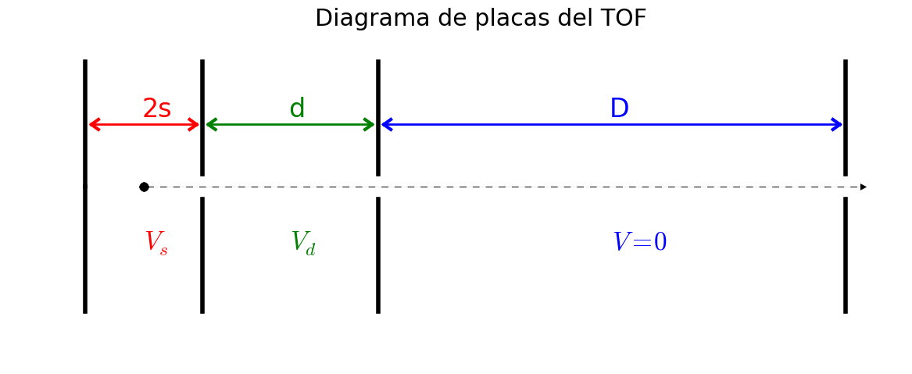

Implementación de cálculo de tiempo de vuelo¶
{kind=link}
Ecuaciones de movimiento¶
Las ecuaciones de movimiento para cada tramo del tiempo de vuelo son
\[\begin{split}v &= v_{0} + a t \\
\Delta s &= v_{0} t + a t^{2}/2 \qquad (a = q E /m )\end{split}\]
Definiendo las cantidades adimensionales
\[\begin{split}u &\equiv \sqrt{m} v \\
f &\equiv a/m = qE \,, \\
T &\equiv t/\sqrt{m}\end{split}\]
y resolviendo el tiempo obtenemos
\[T = \left[\sqrt{u_{0}^{2} + 2 \Delta s\, f} - u_{0}\right]/f\]
Los tiempos de vuelo para cada tramo serán (\(t_{j} = \sqrt{m}\,T_{j}\)):
\begin{align*}
T_{s} &= \left[\sqrt{u_{0}^{2} + 2 (s_{0} - x_{0})\, q E_{s}} - u_{0}\right]/(q E_{s}) & u_{s} &= u_{0} + q \,E_{s} T_{s} \\
T_{d} &= \left[\sqrt{u_{s}^{2} + 2\, q\,d E_{d}} - u_{s}\right]/(q E_{d}) & u_{d} &= u_{s} + q\, E_{d} \,T_{d} \\
T_{D} &= D/u_{d}
\end{align*}
Condiciones iniciales¶
La distribución de velocidades inicial en la dirección de aceleración está dada por la distribución de Maxwell-Boltzmann
\[P(u_{0}) = \frac{1}{\mathcal{Z}}\, e^{-u_{0}^{2}/2k_{B}T}\]con ancho \(\sigma = \sqrt{k_{B} T}\)
La distribución de posición puede elegirse uniforme de ancho \(\delta s\), o normal con \(\sigma= \delta s/2\).
La distribución de tiempos iniciales puede elegirse uniforme de ancho \(\delta t\), o normal con \(\sigma= \delta t/2\). El valor default es \(\delta t= 8~\mathrm{ns}\).